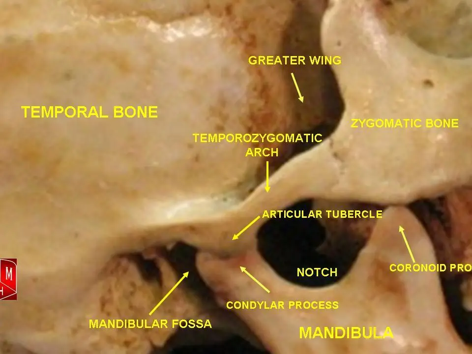
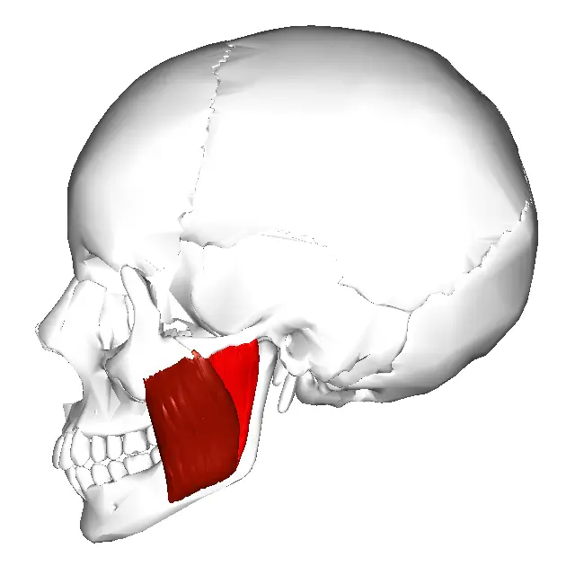

DX.8 — Trouble temporo-mandibulaire douloureux
Une otalgie unilatérale avec une oreille normale à l’examen relève le plus souvent d’un trouble temporo-mandibulaire, que l’ORL (oto-rhino-laryngologiste) ne prend pas en charge S5. Le diagnostic reste clinique : palpation de l’articulation et des muscles, mesure de l’ouverture buccale, puis tri entre forme musculaire et forme articulaire S1S2. Le traitement commence par des mesures réversibles, physiothérapie en tête, et réserve l’imagerie et la chirurgie aux échecs bien documentés S1S4.
1. Définition
Les chirurgiens maxillo-faciaux du CHUV (Centre hospitalier universitaire vaudois) divisent les désordres de l’articulation temporo-mandibulaire en deux catégories : désordres musculaires, ou syndrome myofascial, et désordres articulaires, ou dérangement interne S1. Le trouble temporo-mandibulaire douloureux est, dans les critères internationaux des troubles temporo-mandibulaires (TMD, temporomandibular disorders), dits critères diagnostiques (DC/TMD), le groupe des troubles où la douleur domine S8.
2. Épidémiologie (Suisse, puis Europe)
Selon la synthèse du CHUV, jusqu’à 75 % de la population présentent un signe et environ 33 % au moins un symptôme lié à l’articulation ou aux muscles masticateurs S1. Seuls 5 % à 7 % des patients nécessiteront cependant un traitement, et le tableau des chiffres montre un écart semblable dans la grande étude allemande S1S7.
Le terrain touche surtout la femme jeune, et l’histoire naturelle reste favorable dans la grande majorité des cas S1S6. La recommandation écossaise ajoute que ce trouble constitue la première cause d’otalgie unilatérale lorsque l’examen de l’oreille est normal S5.
Signes et symptômes : données chiffrées
| Donnée | Population et mesure | Année | Source |
|---|---|---|---|
| Jusqu’à 75 % ont un signe, environ 33 % au moins un symptôme | Population générale, synthèse du CHUV | 2007 | S1 |
| 5 % à 7 % des patients nécessiteront un traitement | Patients avec signes, synthèse du CHUV | 2007 | S1 |
| Un ou plusieurs signes cliniques chez 49,9 % des adultes | 4 289 adultes de 20 à 81 ans examinés, Poméranie, Allemagne | 2004 | S7 |
| Douleur articulaire ressentie par 2,7 % seulement | Même cohorte allemande, entretien | 2004 | S7 |
| Sensibilité des muscles masticateurs chez 15 % | Même cohorte, examen clinique | 2004 | S7 |
| Bruits articulaires chez 25 % | Même cohorte, examen clinique | 2004 | S7 |
| Ouverture maximale inférieure à 40 mm chez 9 % | Même cohorte, examen clinique | 2004 | S7 |
| Mouvements irréguliers, déviation ou déflexion, chez 28 % | Même cohorte, examen clinique | 2004 | S7 |
| Sensibilité de l’articulation à la palpation chez 5 % | Même cohorte, examen clinique | 2004 | S7 |
L’écart entre la moitié des adultes porteurs d’un signe et moins de 3 % qui ressentent une douleur explique pourquoi un signe isolé ne justifie pas de traitement S7. Les femmes présentaient plus souvent tous les signes et symptômes, mais la différence n’atteignait pas la signification statistique dans tous les groupes d’âge S7.
Terrain et facteurs associés
| Facteur | Donnée | Portée | Source |
|---|---|---|---|
| Sexe féminin | Rapport femme-homme de 4 pour 1 | Terrain le plus fréquent | S1 |
| Âge | Entre 15 et 45 ans | Adulte jeune | S1 |
| Bruxisme sévère | Présent chez environ 50 % des patients avec douleur orofaciale | Aucune corrélation avec la gravité | S1 |
| Stress et anxiété | Douleur aggravée en période de stress intense | Facteur psychologique prédominant | S1 |
| Occlusion dentaire | Rôle très controversé | Meulage sans preuve formelle | S1 |
| Orthodontie | Souvent incriminée | Lien causal non démontré | S1 |
Le NHS (National Health Service) cite aussi le grincement des dents, l’usure de l’articulation, un coup au visage, le stress et une occlusion irrégulière parmi les causes S6. Ces facteurs décrivent des associations ; le CHUV souligne qu’aucun d’eux ne permet de cibler une cause unique ni de prédire la gravité S1.
Histoire naturelle
Le NHS décrit un trouble rarement grave, qui s’améliore en général de lui-même sans traitement S6. Le CHUV précise que l’évolution est le plus souvent favorable après un traitement conservateur, et que l’évolution vers une atteinte invalidante reste rare S1.
Les formes qui résistent au traitement conservateur se comportent comme une maladie chronique et peuvent nécessiter une approche multidisciplinaire, voire chirurgicale S1. Les HUG (Hôpitaux universitaires de Genève) reconnaissent que certains patients gardent leurs douleurs malgré les progrès, d’où le recours possible aux spécialistes de la douleur chronique S4.
3. Physiopathologie
La base à connaître décrit une articulation suspendue, munie d’un disque comme le genou, dont un muscle ptérygoïdien latéral tire la partie antérieure S1S4. Les chirurgiens lausannois décrivent une articulation soumise à des contraintes répétées, dont la surcharge du système de compensation produit l’atteinte musculaire ou articulaire S2.
La chaîne causale distingue deux voies, l’hyperactivité musculaire et la luxation du disque, qui expliquent des signes différents S1. Le lien avec l’oreille tient à la proximité du conduit et à l’innervation sensitive étendue de l’oreille, et le tableau de corrélation relie chaque mécanisme à son geste S1S10.
Base à connaître : articulation temporo-mandibulaire
L’articulation unit le condyle de la mandibule à la fosse articulaire de l’os temporal, et un disque sépare les deux surfaces en deux espaces S1. Ce disque fibro-cartilagineux et biconcave rend le mouvement harmonieux ; il prolonge en avant le tendon du muscle ptérygoïdien latéral S1.
Articulation temporo-mandibulaire, vue latérale sur crâne sec. Cette photographie anatomique en couleur montre les pièces osseuses de l’articulation que la palpation cherche en avant du tragus.

Le lecteur doit d’abord retrouver seul le condyle, puis la fosse qui le reçoit.
Sur la copie annotée, cinq cercles rouges situent les pièces osseuses dans l’ordre de la lecture.
- Le condyle de la mandibule est la tête articulaire que le doigt sent bouger à l’ouverture S1.
- La fosse mandibulaire de l’os temporal reçoit le condyle bouche fermée S1.
- Le tubercule articulaire correspond à l’éminence temporale, contre laquelle le disque luxé se coince devant le condyle S1.
- L’arcade zygomatique sert de repère : l’articulation se palpe juste au-dessous S1.
- Le processus coronoïde se situe en avant : la palpation de l’articulation se fait donc en arrière, près du tragus S1.
- Les étiquettes anglaises de la photographie appartiennent à l’auteur ; la lecture guidée les traduit.
- Un os sec ne montre pas le disque, cartilagineux, que seule l’IRM (imagerie par résonance magnétique) visualise S1.
Ce que l’image décide. Le médecin place l’index sous l’arcade, en avant du tragus, et sent le condyle quitter sa fosse quand le patient ouvre la bouche S1.

En arrière, le disque se rattache au condyle par sa lame inférieure et à la base du crâne par une lame supérieure richement vascularisée S1. Cette lame se poursuit dans l’oreille moyenne par le ligament malléolaire antérieur et le ligament disco-malléolaire, ce qui rapproche anatomiquement articulation et oreille S1.
Chaîne causale : deux voies vers la douleur
| Voie | Étape | Mécanisme | Signe produit | Source |
|---|---|---|---|---|
| Musculaire | 1 | Hyperactivité des muscles masticateurs, liée au serrement ou au grincement | Douleur péri-auriculaire à la mastication | S1 |
| Musculaire | 2 | Spasme ou contraction involontaire du muscle | Douleur locale ou irradiée vers l’oreille, les dents, les yeux, la nuque | S1 |
| Musculaire | 3 | Zones gâchettes dans le muscle | Douleur reproduite par la palpation | S1 |
| Articulaire | 1 | Luxation antérieure du disque | Ligament et disque coincés entre condyle et éminence | S1 |
| Articulaire | 2 | Disque réduit à l’ouverture | Craquement caractéristique | S1 |
| Articulaire | 3 | Disque non réductible | Ouverture limitée à 25 mm ou moins, blocage en fermeture | S1 |
| Articulaire | 4 | Surcharge rétrodiscale ou capsulite | Douleur unilatérale de l’articulation | S1 |
Les deux voies se combinent souvent : une luxation méniscale déclenche des spasmes réflexes, surtout du ptérygoïdien latéral, ce que le CHUV appelle le signe de Hilton S1. Laskin a distingué dès 1969 les problèmes de pertinence articulaire de ceux de pertinence musculaire, distinction encore utile au chevet S1.
Pourquoi l’oreille fait mal
La revue systématique britannique rappelle que l’oreille reçoit une innervation sensitive très étendue, d’où le grand nombre de causes possibles d’otalgie référée S10. Elle retient le trouble temporo-mandibulaire, le syndrome d’Eagle et les névralgies comme principales causes étudiées S10.
Dès 1934, l’ORL américain Costen attribuait à l’articulation une perte auditive subjective, des acouphènes et des vertiges ; la plupart de ses hypothèses ont depuis été réfutées S1. Le médecin retient donc l’otalgie référée, mais il n’attribue pas une surdité objective au trouble temporo-mandibulaire sans autre bilan S1.
| Territoire | Lien avec l’oreille | Diagnostic du lot | Source |
|---|---|---|---|
| Articulation et muscles masticateurs | Contiguïté avec le conduit, spasme irradié | Trouble temporo-mandibulaire, DX.8 | S1 |
| Dents | Douleur référée par la même innervation | Abcès dentoalvéolaire, DX.9 | S10 |
| Pharynx et base de langue | Douleur référée | Carcinome oropharyngé, DX.10 | S10 |
Corrélation : mécanisme, signe, examen, geste
| Mécanisme | Signe | Examen qui le montre | Geste | Source |
|---|---|---|---|---|
| Hyperactivité musculaire | Zones gâchettes, ouverture rectiligne | Palpation des muscles | Physiothérapie, myorelaxant à faible dose | S1 |
| Luxation réductible du disque | Claquement, ouverture en zigzag | Observation de l’ouverture | Physiothérapie, gouttière | S1 |
| Luxation non réductible | Ouverture limitée, blocage en fermeture | Mesure interincisive | Physiothérapie, gouttière, puis arthrocentèse | S1 |
| Capsulite | Douleur articulaire aiguë | Palpation de l’articulation | Anti-inflammatoire non stéroïdien | S1 |
| Arthrose | Crépitements, douleur | Orthopantomogramme | Lavages articulaires si échec | S1S4 |
4. Démarche diagnostique
La démarche commence à l’oreille : un conduit et un tympan normaux font chercher une douleur référée, dont le trouble temporo-mandibulaire est la cause la plus fréquente S5. Les étapes ordonnées conduisent ensuite de la palpation à la classification, puis à l’orientation vers le dentiste S1S5.
Le tableau comparatif confronte le trouble aux autres causes d’otalgie à oreille normale, dont certaines menacent la vie ou la vue S6S10. Les pièges de la démarche rappellent qu’un diagnostic de trouble temporo-mandibulaire ne se pose qu’après un examen buccal et cervical complet S1S6.
Démarche en six étapes
| Étape | Question | Action | Source |
|---|---|---|---|
| 1 | L’oreille est-elle normale ? | Otoscopie bilatérale | S5 |
| 2 | La douleur suit-elle la mastication, le serrement, le stress ? | Anamnèse chronologique ciblée | S1 |
| 3 | L’articulation ou les muscles sont-ils douloureux à la palpation ? | Palpation sous l’arcade, en avant du tragus, et des muscles | S1 |
| 4 | L’ouverture est-elle normale, déviée ou limitée ? | Mesure interincisive en millimètres | S1 |
| 5 | S’agit-il d’une forme musculaire, articulaire ou mixte ? | Tableau différentiel du CHUV | S1 |
| 6 | Un signe d’alarme impose-t-il une autre voie ? | Recherche des drapeaux rouges du NHS | S6 |
Tableau comparatif : otalgie à oreille normale
| Diagnostic | Élément qui oriente | Examen qui tranche | Conduite | Source |
|---|---|---|---|---|
| Trouble temporo-mandibulaire douloureux | Douleur à la mastication, palpation positive | Examen clinique | Dentiste, physiothérapie | S1S5 |
| Abcès dentoalvéolaire | Dent douloureuse, joue gonflée | Examen dentaire, orthopantomogramme | Dentiste | S1S10 |
| Carcinome oropharyngé 🚩 | Otalgie référée persistante | Examen ORL | Avis ORL | S10 |
| Syndrome d’Eagle | Douleur référée de la région amygdalienne | Examen ORL | Traitement de la cause | S10 |
| Névralgie | Douleur paroxystique | Examen neurologique | Traitement de la cause | S10 |
| Atteinte avec trouble visuel et sensibilité du cuir chevelu | Céphalées sévères, vision double ou perte de vision | Évaluation médicale urgente | Consultation le jour même | S6 |
| Luxation condylienne | Blocage bouche ouverte, impossibilité de fermer | Examen clinique | Réduction | S1 |
La revue britannique conclut que le traitement d’une otalgie référée vise la pathologie sous-jacente, ce qui impose d’identifier la cause avant de traiter S10.
Pièges de la démarche diagnostique
| Piège | Conséquence | Parade | Source |
|---|---|---|---|
| Adresser à l’ORL une otalgie typique de l’articulation | Consultation inutile | Orientation vers le dentiste | S5 |
| Conclure sans examen dentaire | Abcès méconnu | Orthopantomogramme en première intention | S1 |
| Confondre luxation méniscale et luxation condylienne | Geste inadapté | Blocage en fermeture contre blocage en ouverture | S1 |
| Traiter un claquement isolé et indolore | Traitement inutile | Abstention si aucune gêne | S1 |
| Ignorer un trouble visuel ou une sensibilité du cuir chevelu | Problème grave non traité | Évaluation urgente | S6 |
| Prescrire d’emblée une IRM | Examen coûteux et disproportionné | IRM réservée aux échecs | S1 |
5. Anamnèse ciblée et drapeaux rouges
Une anamnèse spécifique et chronologique, jointe à l’examen, suffit en général à poser le diagnostic et à décider du traitement S1. Les questions ciblées explorent la douleur, les bruits, le blocage et le terrain psychologique, car chacun oriente vers une forme précise S1S6.
Les drapeaux rouges signalent une autre maladie ou une complication, et imposent un avis urgent plutôt qu’un traitement conservateur S6. Le retentissement fonctionnel complète l’entretien, puisqu’il mesure la gêne réelle et guide l’intensité du traitement S6S8.
Questions ciblées et ce que la réponse change
| Question | Réponse qui compte | Orientation | Source |
|---|---|---|---|
| Où se situe la douleur, et à quoi est-elle liée ? | Péri-auriculaire, à la mastication, parfois en casque | Forme musculaire | S1 |
| La douleur est-elle d’un seul côté ? | Unilatérale | Forme articulaire plus probable | S1 |
| Serrez-vous ou grincez-vous des dents ? | Oui, avec stress ou anxiété | Syndrome myofascial | S1 |
| Traversez-vous une période de stress intense ? | Deuil, perte d’emploi, divorce | Douleur plus sévère, prise en charge globale | S1 |
| Entendez-vous un claquement en ouvrant la bouche ? | Oui | Luxation réductible du disque | S1 |
| La mâchoire se bloque-t-elle bouche fermée ? | Oui, ouverture limitée | Luxation non réductible | S1 |
| La mâchoire se bloque-t-elle bouche ouverte ? | Oui, impossible de fermer | Luxation condylienne | S1 |
| Avez-vous des maux de tête autour des tempes ? | Oui | Symptôme compatible avec le trouble | S6 |
Drapeaux rouges et délai de réponse
| Drapeau | Ce qu’il fait craindre | Conduite | Délai | Source |
|---|---|---|---|---|
| Trouble visuel, vision double ou perte de vision | Problème grave nécessitant un traitement urgent | Évaluation médicale urgente | Le jour même | S6 |
| Sensibilité du côté de la tête ou du cuir chevelu | Problème grave nécessitant un traitement urgent | Évaluation médicale urgente | Le jour même | S6 |
| Céphalées fréquentes et sévères | Autre cause de céphalée | Évaluation médicale urgente | Le jour même | S6 |
| Impossibilité de manger ou de boire | Déshydratation, blocage | Évaluation médicale urgente | Le jour même | S6 |
| Blocage bouche ouverte | Luxation condylienne | Réduction | Sans délai | S1 |
| Suspicion de maladie inflammatoire, infectieuse ou tumorale | Autre atteinte de l’articulation | Laboratoire, IRM | Selon le tableau | S1 |
Le NHS demande une consultation urgente pour ces signes, car ils peuvent traduire un problème grave qui exige un traitement rapide S6. La phase A ajoute que l’otalgie persistante du fumeur, avec oreille normale, impose d’exclure un carcinome oropharyngé.
Retentissement et dimension psychosociale
Le protocole DC/TMD prévoit un axe psychosocial de dépistage en 41 questions, qui couvre l’intensité de la douleur, le handicap, la détresse, la fonction mandibulaire et les parafonctions S8. Un dessin de la douleur complète ce dépistage et localise les zones atteintes S8.
| Dimension | Ce que le médecin cherche | Conséquence | Source |
|---|---|---|---|
| Intensité de la douleur | Échelle de douleur | Choix de l’antalgique | S8 |
| Handicap lié à la douleur | Limitation des activités | Intensité du traitement | S8 |
| Détresse psychologique | Stress, anxiété | Techniques de relaxation, psychologue | S6S8 |
| Fonction mandibulaire | Mastication, ouverture, parole | Régime mou, physiothérapie | S6S8 |
| Parafonctions | Serrement, grincement, gomme à mâcher | Conseils et gouttière | S1S6 |
Le NHS propose un psychologue lorsque le stress et l’anxiété aggravent la douleur, ce qui confirme le poids de cette dimension S6.
6. Examen physique ciblé, région par région
L’examen doit différencier le syndrome myofascial du dérangement interne, région par région, en commençant par l’oreille S1S5. La région 1 est l’oreille, la région 2 est l’articulation, et la région 3 comprend les muscles masticateurs S1S5.
La région 4 mesure l’ouverture et les mouvements de la mandibule, et la région 5 inspecte le visage, les dents et la bouche S1.
Région 1 — Oreille
L’otoscopie bilatérale doit montrer un conduit et un tympan normaux, condition posée par la recommandation écossaise pour retenir l’origine articulaire S5. Un conduit anormal renvoie vers les diagnostics à conduit anormal de la phase A, comme l’otite externe ou le bouchon de cérumen.
| Constat | Signification | Conduite | Source |
|---|---|---|---|
| Conduit et tympan normaux, otalgie unilatérale | Trouble temporo-mandibulaire le plus probable | Examen de l’articulation | S5 |
| Douleur à la palpation par le conduit | Partie postérieure de l’articulation douloureuse | Forme articulaire | S1 |
| Conduit inflammatoire ou tympan anormal | Cause otologique | Démarche de l’otalgie à conduit anormal | S5 |
Région 2 — Articulation temporo-mandibulaire
L’articulation se palpe sous l’arcade zygomatique, 1 à 2 cm en avant du tragus, et sa partie postérieure se palpe depuis le conduit auditif externe S1. Le médecin cherche une douleur, un claquement ou un crépitement pendant l’ouverture, la fermeture, la propulsion et la latéralité S1.
| Constat | Signification | Source |
|---|---|---|
| Claquement à l’ouverture ou à la fermeture | Franchissement du disque, luxation antérieure réductible | S1 |
| Crépitement | Atteinte articulaire, souvent dégénérative | S1 |
| Douleur articulaire unilatérale | Surcharge rétrodiscale ou capsulite | S1 |
| Claquement isolé, occasionnel et indolore | Fréquent chez les sujets sains, sans traitement obligatoire | S1 |
Région 3 — Muscles masticateurs
Les muscles de la mastication sont palpés à la recherche de spasmes ou de douleurs, notamment au niveau de zones gâchettes spécifiques S1. Le CHUV décrit les zones gâchettes du temporal, du masséter et du sterno-cléido-mastoïdien, ainsi que des ptérygoïdiens latéral et médial S1.
Muscle masséter, vue latérale du crâne. Ce modèle anatomique en couleur montre le masséter, muscle masticateur le plus accessible à la palpation, et sa relation avec l’articulation.

Le lecteur doit d’abord repérer seul le muscle rouge, puis l’articulation située en arrière et au-dessus.
Sur cette copie, les quatre cercles numérotés désignent le muscle, l’articulation, l’angle et la fosse temporale.
- Le masséter, en rouge, se palpe sur la joue pendant que le patient serre les dents S1.
- L’articulation se trouve en avant du conduit auditif, sous l’arcade zygomatique S1.
- L’angle de la mandibule marque la limite inférieure du masséter.
- La fosse temporale porte le muscle temporal, autre siège de zones gâchettes S1.
- Une douleur du masséter seul, sans craquement ni blocage, oriente vers la forme musculaire S1.
- Une tuméfaction de l’angle ou de la joue n’est pas un spasme : elle fait chercher un abcès dentaire.
Ce que l’image décide. Le médecin palpe le masséter et le temporal des deux côtés, et note si la palpation reproduit la douleur habituelle S1.

Région 4 — Ouverture et mouvements de la mandibule
Une ouverture normale, mesurée entre les incisives, se situe autour de 35 à 45 mm ; la propulsion et la latéralité atteignent environ 10 mm S1. Le médecin observe aussi la trajectoire, car une ouverture rectiligne oriente vers le muscle et une ouverture en zigzag vers le disque S1.
| Mesure ou constat | Seuil | Interprétation | Conduite | Source |
|---|---|---|---|---|
| Ouverture interincisive | 35 à 45 mm | Normale | Aucune | S1 |
| Ouverture limitée, blocage en fermeture | 25 mm ou moins | Luxation méniscale non réductible | Physiothérapie, gouttière, avis spécialisé | S1 |
| Ouverture maximale réduite | Moins de 40 mm | Constatée chez 9 % de la population allemande | À interpréter avec la douleur | S7 |
| Trajectoire en zigzag | Sans seuil | Luxation méniscale réductible | Physiothérapie | S1 |
| Trajectoire rectiligne, non limitée | Sans seuil | Forme musculaire | Physiothérapie | S1 |
| Bouche bloquée ouverte | Fermeture impossible | Luxation condylienne | Réduction | S1 |
Région 5 — Visage, dents et bouche
L’observation cherche une asymétrie, une hypertrophie musculaire et une usure dentaire, qui témoignent d’une hyperactivité des muscles masticateurs S1. L’examen de la bouche cherche aussi une dent douloureuse ou une tuméfaction, que la phase A rattache à l’abcès dentoalvéolaire.
7. Approche syndromique
Le trouble appartient au syndrome de l’otalgie avec oreille normale, ou otalgie référée, que la phase A partage avec l’abcès dentaire et le carcinome oropharyngé S10. Le tableau syndromique sépare ensuite trois profils à l’intérieur même du trouble, car leur traitement diffère S1.
Profils syndromiques
| Profil | Éléments | Forme | Première décision | Source |
|---|---|---|---|---|
| Douleur musculaire | Zones gâchettes, pas de bruit, ouverture rectiligne non limitée | Syndrome myofascial | Physiothérapie, antalgie | S1 |
| Craquement avec ou sans douleur | Claquement, ouverture en zigzag | Luxation méniscale réductible | Physiothérapie, gouttière | S1 |
| Blocage bouche fermée | Ouverture limitée | Luxation méniscale non réductible | Physiothérapie, gouttière, puis arthrocentèse | S1 |
| Blocage bouche ouverte | Fermeture impossible | Luxation condylienne | Réduction | S1 |
| Otalgie avec oreille anormale | Conduit ou tympan pathologique | Cause otologique | Démarche de la phase A | S5 |
Les formes musculaire et articulaire peuvent coexister, ce qui complique le diagnostic et le traitement ; le tableau sert alors à hiérarchiser les gestes S1.
8. Diagnostic positif et critères
Le diagnostic positif est essentiellement clinique, selon les chirurgiens maxillo-faciaux lausannois et genevois S2S4. Les critères cliniques du CHUV séparent forme musculaire et forme articulaire, et la validité des critères DC/TMD chiffre leur performance S1S8.
Critères cliniques : musculaire ou articulaire
| Élément | Forme musculaire | Forme articulaire | Source |
|---|---|---|---|
| Douleur | Zones gâchettes | Absente ou articulaire | S1 |
| Bruit | Absent | Claquement ou grincement | S1 |
| Ouverture | Rectiligne et non limitée | En zigzag si luxation réductible, limitée si non réductible | S1 |
| Traitement | Antalgie, physiothérapie, gouttière, toxine botulinique | Anti-inflammatoire, physiothérapie, gouttière, arthrocentèse | S1 |
Le diagnostic retient la douleur, les bruits articulaires et la limitation d’ouverture comme motifs de consultation les plus fréquents S2. Il exige surtout une oreille normale, car la recommandation écossaise ne retient l’origine articulaire qu’à cette condition S5.
Validité des critères DC/TMD
| Critère | Sensibilité | Spécificité | Portée | Source |
|---|---|---|---|---|
| Troubles douloureux les plus fréquents | 0,86 ou plus | 0,98 ou plus | Diagnostic clinique valide | S8 |
| Un trouble intra-articulaire | 0,80 | 0,97 | Diagnostic clinique valide | S8 |
| Autres troubles intra-articulaires | Insuffisante | Insuffisante | Dépistage seulement | S8 |
| Objectif fixé pour l’ancienne version | 0,70 ou plus | 0,95 ou plus | Non atteint, d’où la révision | S8 |
La fiabilité entre examinateurs de l’examen clinique des troubles douloureux est excellente, avec un kappa de 0,85 ou plus S8. Le protocole comprend aussi un questionnaire de dépistage valide pour tout trouble temporo-mandibulaire douloureux, utilisable avant l’examen S8.
9. Examens complémentaires
Le diagnostic étant le plus souvent clinique, les examens complémentaires ont une indication très limitée ; les examens ciblés précisent quand les demander S1. Le tableau des examens à éviter protège contre les demandes disproportionnées, dont l’IRM de première intention S1.
Examens ciblés : indication, résultat, interprétation, conduite
| Examen | Indication | Résultat | Interprétation | Conduite | Source |
|---|---|---|---|---|---|
| Orthopantomogramme | Première intention si un examen est nécessaire | Surfaces articulaires visibles | Exclut une atteinte dentaire qui imite le trouble | Traitement dentaire si cause trouvée | S1 |
| Laboratoire | Suspicion de maladie inflammatoire ou infectieuse | Marqueurs inflammatoires | Atteinte systémique ou infectieuse | Avis spécialisé | S1 |
| IRM | Échec du traitement conventionnel | Position et forme du disque | Dérangement interne confirmé | Avis de chirurgie maxillo-faciale | S1 |
| IRM | Suspicion inflammatoire, infectieuse ou tumorale | Lésion articulaire | Autre diagnostic | Avis spécialisé | S1 |
| Scanner ou IRM | Bilan spécialisé le cas échéant | Os et articulation | Diagnostic de l’atteinte | Choix du traitement | S4 |
L’orthopantomogramme ne donne aucun renseignement sur le disque, qui est cartilagineux ; il ne sert donc pas à confirmer une luxation méniscale S1. L’IRM reste disproportionnée dans la majorité des cas, en raison de son coût et du caractère clinique du diagnostic S1.
10. Arbre décisionnel
- Le médecin examine les deux oreilles ; une oreille anormale fait suivre la démarche des causes otologiques S5.
- Un trouble visuel, une sensibilité du cuir chevelu, des céphalées sévères ou l’impossibilité de boire imposent une évaluation urgente S6.
- Une bouche bloquée ouverte signe une luxation condylienne, qui demande une réduction S1.
- Une oreille normale avec palpation douloureuse de l’articulation ou des muscles fait retenir le trouble temporo-mandibulaire S1S5.
- Le tableau clinique est classé en forme musculaire, articulaire ou mixte S1.
- Le traitement conservateur débute : conseils, antalgie, physiothérapie, puis gouttière en seconde intention S1S6.
- Le patient est orienté vers le dentiste, et non vers l’ORL S5.
- Un échec du traitement conservateur fait discuter IRM, toxine botulinique ou lavages articulaires en milieu spécialisé S1S3.
11. Prise en charge selon les recommandations suisses
11.A Le but est de soulager la douleur et de restaurer la fonction par des mesures réversibles, en évitant les approches agressives et irréversibles en première intention S1. Le traitement conservateur, maintenu dans une approche globale, reste le premier pilier, et le traitement doit reposer sur un diagnostic solide S1S2.
11.B La conduite chronologique traite d’abord le blocage et les drapeaux rouges, puis le trouble lui-même S1S6. L’ordre du traitement va des conseils à la physiothérapie, puis à la gouttière, et le tableau des mesures personnelles précise les gestes du patient S1S4S6.
La pharmacologie repose sur trois molécules décrites par leur AIPS (information professionnelle suisse) : l’ibuprofène, le paracétamol et la tizanidine S1S6. Les règles de choix écartent l’amitriptyline et la toxine botulinique, hors AIPS pour cette indication, et les données d’efficacité jugent la gouttière S1S9.
Les recours spécialisés prennent le relais en cas d’échec : toxine botulinique, lavages articulaires, prothèse et consultation de la douleur S3S4.
11.C La surveillance mesure la douleur, l’ouverture et la tolérance des médicaments, avec des critères d’échec explicites S1S11.
11.D Le pronostic reste favorable dans la grande majorité des cas, et des critères énumérés fixent la guérison et l’orientation S1S6.
Conduite chronologique
| Moment | Situation | Geste | Délai maximal | Source |
|---|---|---|---|---|
| Consultation | Trouble visuel, sensibilité du cuir chevelu ou claudication de la mâchoire : suspicion d’artérite à cellules géantes | Protéine C réactive (CRP) et vitesse de sédimentation (VS) prélevées avant la première dose ou juste après ; corticothérapie à haute dose sans attendre la biopsie ni l’imagerie ; avis spécialisé, ophtalmologique si trouble visuel ; dose : hors AIPS, À vérifier | Le jour même | S6S15 |
| Consultation | Impossibilité de manger ou de boire | Évaluation médicale urgente | Le jour même | S6 |
| Consultation | Bouche bloquée ouverte | Réduction de la luxation condylienne | Sans délai | S1 |
| Phase aiguë | Douleur musculaire en crise | Antalgie, myorelaxant à faible dose, régime mou | Dès le diagnostic | S1S6 |
| Après la phase aiguë | Douleur persistante | Physiothérapie spécialisée | Selon le spécialiste | S1S4 |
Le CHUV rappelle que la manœuvre de réduction de la luxation temporo-mandibulaire décrite par Hippocrate reste utilisée de nos jours S1.
Ordre du traitement
| Rang | Mesure | Indication | Critère d’échec | Étape suivante | Source |
|---|---|---|---|---|---|
| 1 | Conseils et soins personnels | Tout trouble douloureux | Douleur persistante | Antalgie et physiothérapie | S6 |
| 2 | Physiothérapie | Premier choix, forme musculaire ou articulaire | Échec malgré un traitement bien conduit | Gouttière | S1S4 |
| 3 | Gouttière occlusale sur mesure, portée la nuit | Seconde intention, ou d’emblée si bruxisme sévère | Échec | Avis spécialisé | S1 |
| 4 | Toxine botulinique | Forme musculaire réfractaire | Échec | Consultation de la douleur | S1S3 |
| 5 | Lavages articulaires | Échec avec signes articulaires | Échec | Chirurgie ou prothèse | S3S4 |
Le CHUV indique que la physiothérapie seule suffit chez la grande majorité des patients, qu’elle vise une atteinte musculaire ou articulaire S1. Les HUG décrivent la même progression, des traitements conservateurs aux lavages articulaires réservés à de très rares cas d’arthrose S4.
Mesures personnelles conseillées par le NHS
| Mesure | Modalité | Raison | Source |
|---|---|---|---|
| Alimentation molle | Pâtes, omelettes, soupes | Moins de travail des muscles | S6 |
| Froid | Petits pois surgelés dans un linge, 5 minutes au maximum à la fois | Soulagement local | S6 |
| Chaleur | Bouillotte dans un linge, deux fois par jour, 15 à 20 minutes | Détente musculaire | S6 |
| Dents écartées | Pas de serrement hors des repas | Réduire l’hyperactivité | S6 |
| Massage | Massage des muscles douloureux de la mâchoire | Soulagement musculaire | S6 |
| Éviter | Gomme à mâcher, mâchonnement de stylos, bâillement trop large | Limiter la surcharge articulaire | S6 |
| Antalgique simple | Paracétamol ou ibuprofène | Contrôle de la douleur | S6 |
Le médecin choisit le froid ou la chaleur selon ce qui soulage le mieux le patient, conformément au conseil du NHS S6.
Ibuprofène — Brufen® (n° 45031)
| Rubrique | Contenu de l’AIPS |
|---|---|
| Classe | Anti-inflammatoire non stéroïdien, inhibiteur de la synthèse des prostaglandines S11 |
| Indication | Myalgies, arthroses, odontalgies et douleurs après interventions dentaires, parmi d’autres indications S11 |
| Dose | Affections rhumatismales : dose initiale de 1200 à 1800 mg par jour en plusieurs prises ; entretien de 600 à 1200 mg par jour ; maximum 2400 mg par jour S11 |
| Durée | Dose efficace la plus faible pendant le minimum de temps nécessaire S11 |
| Contre-indication | « Hypersensibilité au principe actif ou à l'un des excipients cités dans la composition. » ; « Tendance accrue aux saignements. » ; « Insuffisance rénale grave (clairance de la créatinine <30 ml/min). » S11 |
| Grossesse | « A moins d'une nécessité clairement établie, l'utilisation de l'ibuprofène est à éviter au cours du premier et du deuxième trimestre de la grossesse. » ; « L'ibuprofène est contre-indiqué au cours du troisième trimestre de la grossesse. » S11 |
| Allaitement | « Les anti-rhumatismaux non stéroïdiens passent dans le lait maternel. Par prudence, l'ibuprofène ne doit donc pas être pris pendant l'allaitement. Si le traitement est indispensable, le nourrisson doit être sevré. » S11 |
| Autres contre-indications | Ulcère ou hémorragie digestive, maladie inflammatoire intestinale active, troubles hépatiques graves S11 |
Le CHUV juge les anti-inflammatoires le plus souvent inefficaces dans ce trouble, sauf pour les douleurs aiguës associées à une capsulite S1. Le médecin doit donc réserver l’ibuprofène à la poussée douloureuse articulaire, à la dose efficace la plus faible et pour une durée courte S1S11.
Paracétamol — DAFALGAN® (n° 47503)
| Rubrique | Contenu de l’AIPS |
|---|---|
| Classe | Antalgique et antipyrétique S12 |
| Indication | Douleurs d’intensité faible à modérée, dont douleurs articulaires et ligamentaires et maux de dents S12 |
| Dose | Plus de 40 kg : 500 à 1000 mg par prise, intervalle de 4 à 8 heures, maximum 4000 mg par jour S12 |
| Insuffisance rénale | Clairance de 10 à 50 ml/min : intervalle de 6 heures, maximum 3000 mg par jour ; moins de 10 ml/min : 8 heures, 2000 mg par jour S12 |
| Contre-indication | « Hypersensibilité au paracétamol et aux substances apparentées (p.ex. propacétamol) ou à un des excipients selon la composition. » ; « Troubles fonctionnels hépatiques graves (cirrhose hépatique et ascite)/hépatite aiguë ou maladie hépatique décompensée active. » ; « Hyperbilirubinémie constitutionnelle héréditaire (maladie de Gilbert). » S12 |
| Grossesse | « En cas de nécessité clinique, le paracétamol peut être pris ou utilisé pendant la grossesse. Toutefois, il convient de prendre ou d'utiliser la dose efficace la plus faible pendant la durée la plus courte possible et à la fréquence la plus basse possible. » S12 |
| Allaitement | « Bien que l'utilisation du paracétamol soit considérée comme compatible avec l'allaitement, la prudence est de mise lors de l'utilisation du Dafalgan pendant l'allaitement. » S12 |
Le NHS place le paracétamol parmi les premiers antalgiques de l’autosoin, ce qui en fait le choix de base lorsque l’anti-inflammatoire est contre-indiqué S6S12. L’AIPS demande aussi de vérifier que les autres médicaments pris ne contiennent pas de paracétamol, afin de prévenir le surdosage S12.
Tizanidine — Sirdalud® comprimés (n° 44691)
| Rubrique | Contenu de l’AIPS |
|---|---|
| Classe | Agent des spasmes musculaires, à marge thérapeutique étroite S14 |
| Indication | Spasmes musculaires douloureux ; spasticités d’origine neurologique S14 |
| Dose | Spasmes musculaires douloureux : 2 à 4 mg 3 fois par jour ; dans les cas graves, 2 ou 4 mg supplémentaires, de préférence au coucher S14 |
| Début | Posologie faible de 2 mg au début, puis augmentation prudente selon le besoin S14 |
| Contre-indication | « Hypersensibilité au principe actif ou à l'un des excipients. Fonction hépatique sévèrement réduite. » ; association contre-indiquée avec la fluvoxamine et la ciprofloxacine, inhibiteurs puissants de l’isoenzyme 1A2 du cytochrome S14 |
| Grossesse | « À moins d'une nécessité absolue, Sirdalud ne doit par conséquent pas être utilisé durant la grossesse » ; test de grossesse avant traitement et contraception efficace chez la femme en âge de procréer S14 |
| Allaitement | « Pour cette raison, la tizanidine ne doit pas être prise pendant la période d'allaitement. » S14 |
Le CHUV indique que les myorelaxants à faibles dosages peuvent soulager les douleurs aiguës en relâchant les spasmes S1. Le profil du trouble, qui touche surtout la femme jeune, rend obligatoires le test de grossesse et la contraception exigés par l’AIPS S1S14.
Règles de choix et molécules hors AIPS
| Situation | Choix | Raison | Source |
|---|---|---|---|
| Douleur musculaire aiguë | Paracétamol, puis tizanidine à faible dose | Spasme dominant | S1S14S12 |
| Capsulite aiguë | Ibuprofène sur une courte durée | Seule indication où l’anti-inflammatoire aide | S1S11 |
| Grossesse au troisième trimestre | Paracétamol, ibuprofène exclu | Contre-indication de l’AIPS | S11S12 |
| Allaitement | Paracétamol avec prudence ; tizanidine exclue | AIPS respectives | S12S14 |
| Forme chronique | Amitriptyline à faible dose, hors AIPS pour cette indication, sans dose dans ce cours | Efficacité rapportée par le CHUV | S1 |
| Forme musculaire réfractaire | Toxine botulinique, hors AIPS pour cette indication, en milieu spécialisé | Résultats encourageants | S1S3 |
Les indications de l’AIPS de l’amitriptyline sont la dépression, les douleurs neuropathiques et la prophylaxie de la céphalée de tension chronique, mais pas le trouble temporo-mandibulaire S13. Le médecin qui l’envisage pour une forme chronique agit donc hors indication, sur l’avis du spécialiste et après information du patient S1.
Données d’efficacité : gouttière et physiothérapie
| Comparaison | Résultat | Certitude | Source |
|---|---|---|---|
| Gouttière, toutes séries confondues | Succès de 70 % à 90 % selon la synthèse du CHUV | Synthèse narrative | S1 |
| Gouttière dure de stabilisation contre absence de traitement | Douleur musculaire à la mastication réduite, différence moyenne de −1,97 | Très faible | S9 |
| Gouttière contre gouttière placebo | Peu ou pas de différence sur la douleur articulaire à la mastication | Très faible | S9 |
| Gouttière contre physiothérapie | Peu ou pas de différence sur la douleur musculaire au repos | Très faible | S9 |
| Gouttière contre rééducation myofonctionnelle | La rééducation pourrait réduire les bruits articulaires | Très faible | S9 |
La revue Cochrane de 2024 a inclus 57 essais et 2846 participants, sans pouvoir conclure sur l’efficacité des interventions occlusales S9. Le meulage sélectif de l’occlusion se pratique encore, alors qu’aucune preuve scientifique formelle ne le soutient selon le CHUV S1.
Recours spécialisés en cas d’échec
| Recours | Indication | Effet attendu | Source |
|---|---|---|---|
| Toxine botulinique intramusculaire | Atteinte musculaire en crise ou échec de la physiothérapie | Renforcement du traitement conservateur | S1S3 |
| Arthrocentèse ou lavages articulaires | Échec du traitement conservateur avec signes articulaires | Diminution des douleurs, sans traiter la cause | S3S4 |
| Prothèse articulaire | Atteinte articulaire évoluée | Élément de la prise en charge standard | S3 |
| Consultation de la douleur chronique | Douleur persistante malgré tout | Approche multidisciplinaire | S1S4 |
| Chirurgie d’ankylose ou de tumeur | Ankylose, exérèse tumorale | Reconstruction, parfois par greffe de côte | S4 |
La prothèse articulaire est passée du dernier recours à un élément de la prise en charge standard, grâce aux progrès des matériaux et de la planification S3.
Surveillance : quand, quoi, critère d’échec
| Moment | Ce que le médecin contrôle | Critère d’échec | Conduite | Source |
|---|---|---|---|---|
| Phase aiguë | Douleur, ouverture, alimentation | Impossibilité de manger ou de boire | Évaluation urgente | S6 |
| Sous ibuprofène | Symptômes digestifs, durée du traitement | Saignement digestif, traitement prolongé | Arrêt ; dose la plus faible et durée minimale | S11 |
| Sous tizanidine | Vigilance et somnolence | Effet indésirable gênant | Réduction ou arrêt, conduite déduite de l’AIPS | S14 |
| Pendant la physiothérapie | Douleur et ouverture mesurée en millimètres | Échec malgré un traitement bien conduit | Gouttière | S1 |
| Après la gouttière | Douleur et bruits articulaires | Échec avec signes articulaires | IRM et lavages articulaires | S1S3 |
| Après les mesures spécialisées | Douleur persistante | Échec du traitement | Consultation de la douleur chronique | S4 |
L’AIPS de la tizanidine signale aussi une altération possible de la vigilance ; le médecin en informe le patient qui conduit S14.
Pronostic, critères de guérison et d’orientation
| Critère | Contenu | Source |
|---|---|---|
| Guérison | Douleur disparue, ouverture normale de 35 à 45 mm | S1 |
| Guérison | Alimentation normale, sans blocage | S1S6 |
| Entretien | Gouttière portée pendant les périodes de stress après la phase aiguë | S1 |
| Orientation | Échec du traitement conservateur ou signe d’alarme | S1S6 |
| Orientation | Dentiste pour le bruxisme, psychologue pour le stress, physiothérapeute pour les exercices | S6 |
L’évolution vers une atteinte invalidante reste rare ; les formes résistantes relèvent d’une prise en charge multidisciplinaire, comme toute maladie chronique S1.
12. Prévention
La prévention repose sur la réduction des parafonctions : dents écartées hors des repas, pas de gomme à mâcher ni de stylo mâchonné S6. La gestion du stress et du sommeil complète ces gestes, puisque le NHS propose des techniques de relaxation et des moyens d’améliorer le sommeil S6.
Après la phase aiguë, la gouttière peut être reprise lors des périodes de stress ; le médecin évite par ailleurs tout geste occlusal irréversible sans indication S1.
13. Points clés
- Une otalgie unilatérale à oreille normale oriente d’abord vers l’articulation temporo-mandibulaire S5.
- Le diagnostic est clinique ; l’IRM reste réservée aux échecs et aux suspicions d’autre maladie S1.
- Le tableau du CHUV sépare la forme musculaire, sans bruit, de la forme articulaire avec claquement ou blocage S1.
- La physiothérapie est le premier choix, la gouttière vient en seconde intention S1.
- L’ibuprofène est contre-indiqué au troisième trimestre et ne doit pas être pris pendant l’allaitement selon son AIPS S11.
- Trouble visuel, sensibilité du cuir chevelu ou impossibilité de boire imposent une évaluation urgente S6.
- Le patient est adressé au dentiste et non à l’ORL S5.
14. Pièges et questions fréquentes à l'examen fédéral suisse
| Question | Bonne réponse | Raison |
|---|---|---|
| Otalgie unilatérale, oreille normale, douleur à la mastication : à qui adresser ? | Au dentiste. | L’ORL ne prend pas en charge ce trouble (point 4) S5 |
| Faut-il une IRM pour poser le diagnostic ? | Non. | Le diagnostic est clinique (point 9) S1 |
| Une patiente ne peut plus ouvrir au-delà de 25 mm : quel diagnostic ? | Une luxation méniscale non réductible. | Blocage en fermeture (point 6) S1 |
| La bouche reste bloquée ouverte : quel diagnostic ? | Une luxation condylienne. | Blocage en ouverture (point 6) S1 |
| Quel est le traitement de premier choix ? | La physiothérapie. | Elle suffit chez la grande majorité des patients (point 11) S1 |
| Peut-on prescrire de l’ibuprofène à 32 semaines de grossesse ? | Non. | Contre-indiqué au troisième trimestre (point 11) S11 |
| La tizanidine est-elle compatible avec l’allaitement ? | Non. | L’AIPS l’interdit pendant l’allaitement (point 11) S14 |
| Un claquement isolé et indolore doit-il être traité ? | Non. | Il est fréquent chez le sujet sain (point 6) S1 |
| Douleur de mâchoire avec sensibilité du cuir chevelu et vision double : que faire ? | Une évaluation urgente le jour même. | Drapeau rouge du NHS (point 5) S6 |
Sources
Toutes les sources ont été consultées le 13.11.2026.
- [S1] Broome M, Jaques B, Scolozzi P (Division de chirurgie maxillo-faciale, CHUV, Lausanne). Traitement conservateur des désordres de l’articulation temporo-mandibulaire. Rev Med Suisse 2007;3:2204-8. revmed.ch, consulté le 13.11.2026.
- [S2] Kamdem B, Broome M, May L, Blatter J. Dysfonction de l’articulation temporo-mandibulaire : concepts actuels pour le traitement conservateur. Rev Med Suisse 2022;18(798):1860-3, résumé lu. doi:10.53738/REVMED.2022.18.798.1860. doi.org, consulté le 13.11.2026.
- [S3] May L, Blatter J, Louvrier A, Broome M. Dysfonction de l’articulation temporo-mandibulaire : modification de la prise en charge. Rev Med Suisse 2022;18(798):1864-7, résumé lu. doi:10.53738/REVMED.2022.18.798.1864. doi.org, consulté le 13.11.2026.
- [S4] Hôpitaux universitaires de Genève (HUG), service de chirurgie maxillo-faciale et de chirurgie buccale. Traitement des articulations temporo-mandibulaires, dernière mise à jour 12.06.2017. hug.ch, consulté le 13.11.2026.
- [S5] NHS Greater Glasgow and Clyde, Right Decisions (Écosse). Otalgia — Temporomandibular joint dysfunction, version 1.0, revue le 07.05.2025. rightdecisions.scot.nhs.uk, consulté le 13.11.2026.
- [S6] National Health Service (NHS, Angleterre). Temporomandibular disorder (TMD), page revue le 20.06.2023. nhs.uk, consulté le 13.11.2026.
- [S7] Gesch D, Bernhardt O, Alte D, et al. Prevalence of signs and symptoms of temporomandibular disorders in an urban and rural German population: results of a population-based Study of Health in Pomerania. Quintessence Int 2004;35(2):143-50, résumé lu (PubMed 15000638). pubmed.ncbi.nlm.nih.gov, consulté le 13.11.2026.
- [S8] Schiffman E, Ohrbach R, Truelove E, et al. Diagnostic Criteria for Temporomandibular Disorders (DC/TMD) for Clinical and Research Applications: recommendations of the International RDC/TMD Consortium Network and Orofacial Pain Special Interest Group. J Oral Facial Pain Headache 2014;28(1):6-27, résumé lu (consortium international dirigé depuis les États-Unis, signalé comme non européen). doi:10.11607/jop.1151. doi.org, consulté le 13.11.2026.
- [S9] Singh BP, Singh N, Jayaraman S, et al. Occlusal interventions for managing temporomandibular disorders. Cochrane Database Syst Rev 2024;9:CD012850, résumé lu. doi:10.1002/14651858.CD012850.pub2. doi.org, consulté le 13.11.2026.
- [S10] Ally M, Moinie A, Lomas J, et al. Aetiology and management options for secondary referred otalgia: a systematic review and meta-analyses. Eur Arch Otorhinolaryngol 2023, résumé lu. doi:10.1007/s00405-022-07638-7. doi.org, consulté le 13.11.2026.
- [S11] Swissmedic, information professionnelle (AIPS) Brufen®, Viatris Pharma GmbH, n° 45031, « Mise à jour de l’information » : Décembre 2024 (publication refdata 17.03.2025). files.refdata.ch, consulté le 13.11.2026.
- [S12] Swissmedic, information professionnelle (AIPS) DAFALGAN®, UPSA Switzerland AG, n° 47503, « Mise à jour de l’information » : Juillet 2026 (publication refdata 03.09.2026). files.refdata.ch, consulté le 13.11.2026.
- [S13] Swissmedic, information professionnelle (AIPS) Saroten®, Lundbeck (Schweiz) AG, n° 66978, « Mise à jour de l’information » : Octobre 2022 (publication refdata 06.02.2024). files.refdata.ch, consulté le 13.11.2026.
- [S14] Swissmedic, information professionnelle (AIPS) Sirdalud® comprimés, Sandoz Pharmaceuticals AG, n° 44691, « Mise à jour de l’information » : Janvier 2026 (publication refdata 09.07.2026). files.refdata.ch, consulté le 13.11.2026.
- [S15] Mackie SL, Dejaco C, Appenzeller S, et al. British Society for Rheumatology guideline on diagnosis and treatment of giant cell arteritis: executive summary. Rheumatology (Oxford) 2020;59(3):487-494, doi:10.1093/rheumatology/kez664 (Royaume-Uni ; recommandations 2 à 4 lues le 13.11.2026). doi.org